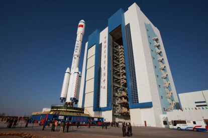

首页
首页 白皮书下载
白皮书下载 产品家族
产品家族 行业应用
行业应用 资讯聚焦
资讯聚焦 有奖问卷
有奖问卷白皮书下载
从神舟九号到神舟十一号，作为中国载人航天工程的战略合作伙伴，联想不断迎接挑战，为中国载人航天事业构筑可靠的IT基石。
联想科技助力中国载人航天工程白皮书

联想是中国载人航天工程的战略合作伙伴，双方的合作开始于 2012 年，神舟九号任务 前，联想与中国载人航天工程办公室共建了中国载人航天工程总体仿真实验室，一批联想 高性能服务器（HPC）、机架式服务器和 ThinkStation 图形工作站服务于该实验室和主要研 制单位，在轨道计算、模拟仿真、航天器设计等关键环节，以卓越的品质和性能，稳定、 高效地承载了大量重要的计算工作，成功助力中国首次载人交会对接任务。2016 年 9 月 15 日，天宫二号顺利升空，并将于 10 月中旬完成与神舟十一号载人飞船的交会对接，联想继 续不遗余力得为中国载人航天工程研制的全体单位提供高质量的信息技术产品和服务。
一、 序言：
中国载人航天工程总体仿真实验室，助力中国“航天强国梦”
航天事业向来是高投入、高风险的。据统计，1990 年以来，世界航天发射 1600 多次 的成功率约 93.7%，其中，中国航天近 130 次发射成功率约 94.4%。近期，国际上航天发 射活动相继出现一些挫折，这些都说明航天发射活动具有较高风险性。空间航天器交会对接 又是航天领域公认的技术难关，在国际上已经进行的交会对接任务中，包括近期国际空间站 的一些对接任务，都不是一帆风顺的。“天宫一号”和“神舟十号”都是高速运行的，时速达 28000 公里以上。在对接过程中，一个很小的误差，也会让飞船抛向离目标航天器很远的地 方，或者，期待的“接吻”会变成可怕的“追尾”。中国载人航天工程总体仿真实验室中进行大 量仿真计算，为圆满完成交会对接任务奠定了坚实的技术基础。
自 1958 年至今，五十多年来，中国航天事业走过了从无到有、从小到大、从弱到强、 特色鲜明的发展道路。在硬件规模低于外国先进国家的情况下，为了提升资源利用率，中国 航天人大量通过仿真，将大量不确定性和风险识别、排除在发射前，并设计出系统最优的任 务方案，极大减少了发射任务的次数。如突破交会对接技术，美、苏均采用飞船与飞船对接 的方案，完成 3 次对接要发射 6 艘飞船，代价较大，周期也较长，而我国通过仿真优化， 提出了发射一个目标航天器，再相继发射 3 艘飞船分别与之对接，只需要进行 4 次发射， 还可以提前验证一些空间实验室的建造运营技术，从而实现了大系统方案最优。就这样，中 国载人航天工程用不到发达国家 1/10 的经费投入，实现了与之比肩的不凡成就。
为确保载人航天飞行任务的安全可靠，需要进行大量的仿真实验，验证系统总体和各分 系统间的匹配性、稳定性、协调性，并通过人为设定各种极限状况，发现任何有可能导致飞 行任务失利的因素。由于建立了一套以联想 HPC、机架式服务器和 ThinkStation 工作站为 核心的仿真系统，载人航天工程总体仿真实验室拥有了强大可靠的计算能力，得以设置各种 不同状态，从容进行上万次的仿真计算，确保天宫一号和神舟飞船华丽的太空拥吻圆满上演。
由于航天动力学系统高度复杂，航天器轨道计算向来是一种高度密集的运算，特别是实 时轨道计算，对计算机性能要求极高。联想专门为载人航天工程总体仿真实验室配备了强大 的 HPC 和 ThinkStation 工作站，承担了往往连续数百小时不间断的高性能轨道计算和图形 处理工作。
在操作手控交会对接的航天员日常训练过程中，随着我国空间站工程的陆续展开，新一 代航天器的设计正在紧张进行。一批联想 ThinkStation 图形工作站正在载人航天工程各主 要研制和试验单位担纲将航天专家的思想转化为设计图纸的重要任务，它们是新一代航天器 实现数字化和虚拟化设计的必备工具。而每一名候选航天员在训练过程中的重中之重——飞 行仿真对接训练，也是由联想服务器和 ThinkStation 图形工作站共同组成。
二、 载人航天轨道计算——数万次仿真计算，只为一次发射成功
载人航天，人命关天，航天员的生命安全，是载人航天工程的重中之重。为了确保载人 航天任务万无一失，最大限度保障航天员的生命安全，载人航天科研人员会在中国载人航天 工程总体仿真实验室中，利用联想 HPC、ThinkStation 工作站模拟测试航天器从发射到回 收的全过程，校验载人航天全系统的匹配性和兼容性，对各种太空物体的位置进行模拟计算 以避免碰撞，并优化推进剂管理方案，从而设计出最优的发射和飞行轨道。
特别是由于天宫二号的轨道高度比天宫一号高 50 公里，要准确发射至这个全新的高度 上，并完成交会对接，需要对发射和飞行轨道进行重新的设计和校验，对于飞行的轨道控制 也是一个全新的挑战。
飞船从火箭点火到入轨约 580 多秒，在此期间，要经历从静止到每秒 7.8 公里的高速， 经历常温常压到极冷极热，经历地面重力环境到微重力环境的巨大变化。这短短的不到十分 钟时间，是航天员进入太空最危险的环节。为了保证火箭发射万无一失，切实确保航天员的 生命安全，载人航天工程技术人员要反复模拟火箭升空中不同的力学、噪声、温湿度环境， 要完成数万次高精度的轨道计算，求解复杂的微分方程组，这对 HPC 的计算能力要求非常 高。
飞船进入轨道后，在 393 公里高空，以每秒 7.8 公里的速度飞行，一天绕地球运行 16 圈，又可能会面对太空垃圾、光照、磁暴、太阳风等各种太空干扰，一颗黄豆大小的太空垃 圾，就能造成箭毁人亡的惨剧。技术人员需要通过更大范围、更长时间的模拟仿真，制定飞 船的最佳飞行方案，因此轨道计算项目需要长时间的密集计算、大数据量吞吐，要求设备必 须不能断电，不能宕机，对服务器的可靠性和品质有非常高的要求。
行百里者半九十。完成交会对接任务后，飞船的归途也并不轻松，至少要闯过“烧蚀关” “黑障关”“过载关”和“冲击关”四道关口，方能安全着陆。载人航天工程着陆场系统总 设计师吴斌介绍，在整个航天飞行过程中，发射和返回过程对航天员和飞船的考验最大，而 返回阶段尤为突出。当飞船再次进入大气层时，返回舱和大气的高速摩擦将使飞船变成一团 火球，表面温度达到三千摄氏度以上，使流经表面的空气电离而出现“黑障”现象，使飞船 与地面失去无线电联系。由于急剧减速，航天员将承受数倍于自身体重的过载。而即便经过 降落伞和反推发动机的缓冲，返回舱着陆时仍有一定的冲击。任何一点疏漏或意外，都会危 及航天员的生命安全。所以神舟飞船的返回弹道、返回舱气动外形和质心配平，都需要经过 严格的仿真计算，并在各种大气环境参数下进行校验，从而将返回控制风险降至最低。
三、 航天员飞行仿真对接训练——万众瞩目的 400 米
手控交会对接是近几次载人航天项目中最激动人心、也是最关键的环节，不但操作难度 巨大，而且极为消耗航天员体力。为了切实保证实际操作质量，提高操作效率，确保交会对 接万无一失，执行飞行任务的航天员们需要进行大量飞行仿真对接训练。数千次的反复训练， 只为在决定任务成败的关键 400 米中交出令祖国和人民满意的答卷！
在神九任务中，经过超过 2000 次训练的刘旺，只用两分钟就成功完成了交会对接任务， 相同的操作如果使用自动对接技术，需要约 10 分钟左右才能完成。这是世界载人航天史上 的奇迹！
1. 手控交会对接的价值
尽管航天器操控日益自动化，但人的作用仍然是无可替代的，目前交会对接技术的发展趋势是人控和自控结合，充分结合人控精细灵活、自控稳定可靠的优势，提高交会对接的灵活性和成功率。手控交会对接是航天员必需掌握的技能，是自动对接失败时的后备手段。即使今天美、俄的载人航天十分成熟，仍保留手控对接作为备份手段。中国要建设大型长期空间站，长期太空驻留需要更频繁的发射和对接，手控对接技术将是自动对接可能失效时的保险，是发展载人航天必然要攻克的难关。
另外，手控对接相对于自动对接系统具有一定优势：航天员的观测能力可以获得更多的信息，及时修正交会和对接过程中的失误与错误；而人类的主观能动性可以对交会对接过程中的各种突发或是异常情况做出更好的判断，节省交会对接过程中消耗的推进剂。加入了人的因素后，可以显著提高交会对接的成功率。但手控对接必须对航天员进行大量严格的训练，使用仿真系统实时模拟飞行器间的相对位置，生成航天员视野中的图像，并最终判定成绩，帮助航天员掌握动作要领。
2. 手控交会对接任务的难度
“神十一”与天宫二号相距 1 万公里到 100 公里时，是地面导引阶段。在相距 100 公 里到 400 米时，是自控寻的阶段，追踪航天器和目标航天器通过测量设备相互“捕获”。两个 航天器相距 400 米至 1 米时，则进入了最终的逼近阶段，此时，人的手控动作开始，进入 手控交会对接。神十飞船和天宫实验室飞行速度都是每小时超过上万公里，重量 8-9 吨，交 会对接时要求接近的相对速度从 300 米/秒降低到 0.2 米/秒以内，角度偏差 1°之内，横向偏 差不超过 20 厘米。
“神十一”飞船共配备 12 个平移发动机，每个发动机最小的喷射力度仅为 1 牛顿（一 个手指轻点桌面的力量），可以从不同相位调整飞船的方向、速度和加速度，在运动过程中 完成轨道的调整，精确度要求非常之高，确保最优的轨道维持和最优的变轨规划。“这就像 天宫上有个靶子，对接就是要像枪一样打中瞄准心。” 中国航天员科研训练中心副主任白延 强说，“对接很容易出现三种相位偏差，一是左右上下的俯仰偏差；二是位置偏差；三是发 生了旋转，产生了姿态的偏离。”因此，航天员要在大量的模拟仿真训练中对这六个自由度 的偏离形成很好的把握。
3. 航天员飞行仿真对接训练
为了能够熟练、精确地把握住交会对接过程的每个细节，航天员们进行了大量手控交会 对接操作技能等项目训练。负责神九交会对接任务的刘旺，利用对接训练模拟器进行仿真对 接训练超过 2000 次。大量模拟仿真对接训练的结果就是，在仪表没有数据的情况下，他仅 靠光学显示就能够操作。航天员科研训练中心主任白延强说，为了让刘旺在任何情形下都能 顺利对接，地面设置了不同距离、不同光照条件、不同初始偏差、不同突发事件等无数种突 发状况。每一次“刁难”与“突然袭击”，刘旺都逐一通关，成功率百分之百。
航天员在地面进行交会对接的飞行仿真对接，后台模拟控制系统需要实时测量位置姿态、 从传感器读取数据，并将读取的数据进行处理，变成控制量输出，在此期间要把上百个环节 做成数学模型，利用联想服务器算出正确的轨道和相对的空间位置并进行实时在线监控，这 对服务器和图形工作站可靠性和计算性能提出了极为严苛的要求。
而在前台航天员面对的界面，由电视摄像机、靶标、综合电子显示屏、“操作平移手柄” 和“姿态手柄”组成。航天员通过 TV 摄像机拍摄到的靶标的图像来判断飞船相对于天宫的相 对位置和相对姿态，判断出相应的误差后，再操纵手柄朝相应的方向运动，当屏幕上的“对 接环接触”、“对接环捕获”的原点由灰色变成绿色时，意味着对接成功。
点击下载